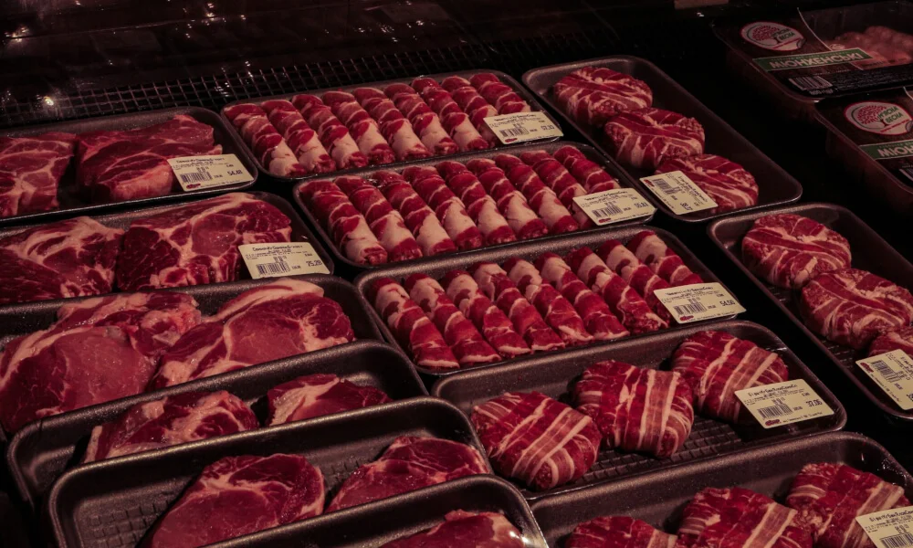
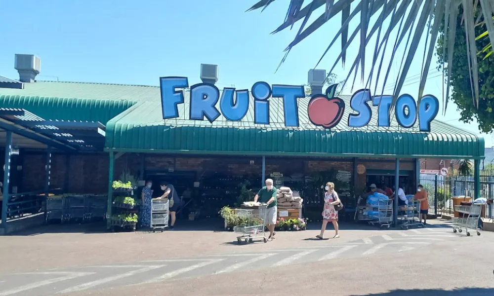
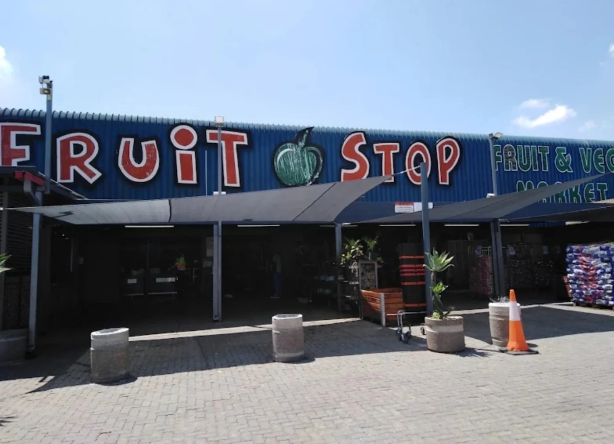

Freshness first
Produce is chosen with quality, colour and taste in mind.
From locally grown fruit and vegetables to quality meat, dairy, bakery goods, groceries and pet food—find more of what your family needs under one roof.
Build your weekly shop from a broad range of produce, butchery, dairy, bakery and grocery choices.

Vibrant, flavourful produce selected for quality and freshness.
Explore produce
Beef, mutton, chicken, seafood and braai favourites.
Visit the butchery
Milk, cheese and delicious deli staples for every home.
View the range
Fresh breads and pantry staples to complete your shopping list.
See more products
Fruit Stop began in Gezina with a clear goal: provide Pretoria with excellent fresh produce and welcoming service. Today, the range has grown to include everything from groceries and meat to dairy, spices and pet food.
A simple promise built around freshness, choice, service and dependable value.
Produce is chosen with quality, colour and taste in mind.
Shop fresh food, groceries and household favourites in one stop.
Reliable choice and affordable options for family shopping.
Friendly staff ready to help you find what you need.
All three Fruit Stop branches follow the same weekly trading hours. The live status below uses Pretoria time.
Times shown in South African Standard Time.
Pretoria timeLoading current time…
Public-holiday hours may differ. Please call your nearest branch to confirm before travelling.
Choose your nearest Fruit Stop for fresh food, helpful service and an easy weekly shop.


Visit Gezina, Silverton or Wonderboom for quality produce and a broad range of everyday essentials.